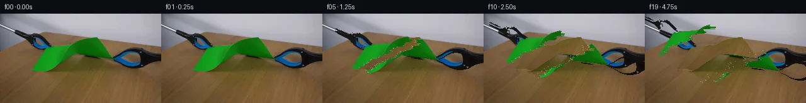

![首帧]()

Round 00
2026-11-05T11:54:28.396250+00:00像素候选变化代码 +378/−0inspection 更新
pixels 1ca8cca7dc012570 · code 73c17fa5a62f9933
查看本轮 generate.py 真实 diff
--- previous/generate.py +++ current/generate.py @@ -0,0 +1,378 @@ +""" +generate.py — PixelWorld-Text: Green Paper Tear Animation +Two blue-black grabber tools pull a piece of green paper from opposite corners, causing it to tear. + +Method: Source-driven displacement. The first frame is segmented into regions +(paper, grabbers, background). The paper is split along a jagged tear line into +left and right pieces. Each piece is displaced (left piece moves up-left with left +grabber, right piece moves down-right with right grabber). The tear gap is filled +with brown table texture sampled from adjacent visible table regions. Torn edges +are roughened with noise to simulate paper fiber tearing. +""" + +import numpy as np +from PIL import Image +from pathlib import Path +import artifact_io + + +def create_masks(arr): + """Segment the first frame into paper, dark (grabbers), and background regions.""" + H, W, _ = arr.shape + green_mask = np.zeros((H, W), dtype=bool) + dark_mask = np.zeros((H, W), dtype=bool) + + for y in range(H): + for x in range(W): + r, g, b = int(arr[y, x, 0]), int(arr[y, x, 1]), int(arr[y, x, 2]) + # Green paper: g significantly higher than r and b, and bright enough + if g > r + 30 and g > b + 20 and g > 80: + green_mask[y, x] = True + # Dark grabbers: very low RGB + elif r < 35 and g < 35 and b < 35: + dark_mask[y, x] = True + + return green_mask, dark_mask + + +def build_table_background(arr, green_mask): + """Extrapolate the brown table surface under the paper region. + + For each row in the paper area, sample from corresponding table rows below + to create a seamless wood grain fill. + """ + H, W, _ = arr.shape + bg = arr.copy() + + # Find the paper region bounds + ys, xs = np.where(green_mask) + if len(ys) == 0: + return bg + + y_min, y_max = ys.min(), ys.max() + x_min, x_max = xs.min(), xs.max() + + # For each column in the paper region, copy table texture from below + # Use a vertical sliding window approach + table_start = y_max + 1 # First row below the paper + table_rows_available = H - table_start + + for y in range(y_min, y_max + 1): + for x in range(x_min, x_max + 1): + if green_mask[y, x]: + # Sample from the table area below, wrapping if needed + offset = y - y_min + src_y = table_start + (offset % max(1, table_rows_available)) + if src_y >= H: + src_y = H - 1 + # Add slight horizontal variation to avoid obvious repetition + src_x = x + if 0 <= src_x < W: + bg[y, x] = arr[src_y, src_x] + + return bg + + +def tear_line_x(y, frame_idx, noise_seed=42): + """Return the x-coordinate of the tear line at a given y for a specific frame. + + The tear path goes from approximately (140, 50) to (65, 88) with sinusoidal + noise to create a jagged paper-tearing effect. + """ + rng = np.random.RandomState(noise_seed + int(y) * 137) + + # Base tear line: diagonal from upper-right-center to lower-left-center + y_start, y_end = 48, 90 + x_start, x_end = 142, 62 + … diff truncated; 291 more lines …